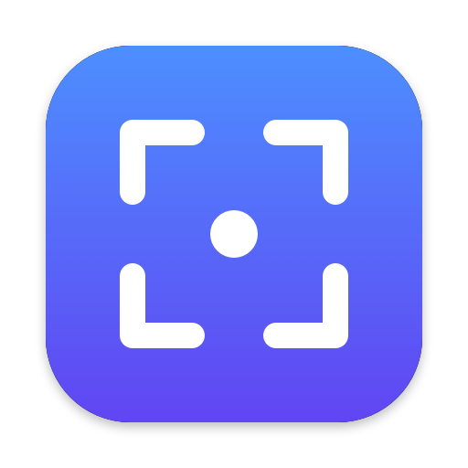

Instant capture
One hotkey freezes the screen instantly. Drag to select, then move or resize with handles. The size shows as you go.
ShotMate is a tiny, native Mac screenshot tool. Press a hotkey, select an area, add an arrow or a note, and paste it anywhere with ⌘V.
ShotMate lives quietly in your menu bar and does one job really well.
One hotkey freezes the screen instantly. Drag to select, then move or resize with handles. The size shows as you go.
Pen, arrow, box and text in six colors and three thicknesses. Clean defaults that look professional.
Press Enter and it’s copied as an image. Paste into Slack, VS Code, ChatGPT, Notion, Mail or Messages.
Captures at native pixel density on Retina and external displays, with correct coordinates across multiple monitors.
⇧⌘S by default. Change it to any combination in one click. ShotMate warns you about conflicts with macOS shortcuts.
No account, no cloud and no analytics. Your screenshots never leave your Mac.
Barely touch the mouse. Every action has a shortcut.
ShotMate is a fully local, open-source Mac app. Every line of code is public, so you can check it yourself.

Works on macOS 14 Sonoma and later, on Apple Silicon and Intel.
Get ShotMate.dmg, open it and drag ShotMate into Applications.
Launch ShotMate. If macOS can’t verify it, go to System Settings › Privacy & Security and click Open Anyway.
Turn on Screen Recording for ShotMate when asked, reopen it, then press ⇧⌘S.
Why the extra step? ShotMate is free and isn’t notarized by Apple yet, so macOS asks you to confirm the first launch. Prefer to build it yourself? Clone the repo and run Scripts/build-app.sh.
Yes. ShotMate is free and open source under the MIT license. There is no account, subscription or upsell.
macOS 14 Sonoma and later, natively on both Apple Silicon and Intel Macs.
No. ShotMate works completely offline. Screenshots go to your clipboard or a folder you choose and are never uploaded, logged or sent to analytics.
Click the ShotMate icon in the menu bar, choose Change Shortcut and press the key combination you want. The default is ⇧⌘S.
ShotMate isn’t notarized by Apple yet. After the first launch attempt, open System Settings › Privacy & Security, scroll down and click Open Anyway next to ShotMate. You only need to do this once.
Yes. ShotMate keeps the same select, mark and copy flow, but it’s a native macOS app with Retina-sharp captures, multi-monitor support and no cloud upload.
Yes. Press ⌘S for a save dialog, or set After Capture to “Save to File” or “Copy + Save” in the menu bar. PNG files are saved to the last folder you used.
Free, tiny and private. Get started in under a minute.